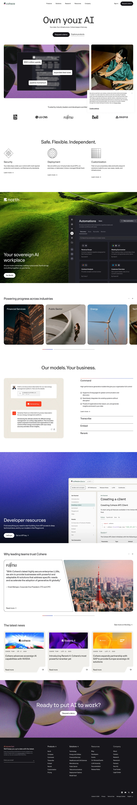

Cohere 主题
Cohere 的 Design.md 主题展示，围绕AI、媒体内容、企业服务、数据仪表盘组织页面。
Enterprise AI platform. Vibrant gradients, data-rich dashboard aesthetic.
AI媒体内容企业服务数据仪表盘B2B 产品SaaS 产品开发工具浅色界面效率工具专业工具

来源
- 来源
- getdesign.md
- 镜像
- github:VoltAgent/awesome-design-md
- 网站
- https://cohere.com/
- 详情
- https://getdesign.md/cohere/design-md
色板
#17171c: #17171c#003c33: #003c33#212121: #212121#000000: #000000#071829: #071829#ffffff: #ffffff#eeece7: #eeece7#edfce9: #edfce9#f1f5ff: #f1f5ff#d9d9dd: #d9d9dd#e5e7eb: #e5e7eb#f2f2f2: #f2f2f2
字体
display: CohereTextbody: Unica77 Cohere Webmono: CohereMonohints: CohereText,Unica77 Cohere Web,CohereMono,Inter
圆角
control: 22pxcard: 22pxpreview: 22pxpill: 32pxsource: design-md
间距
xxs: 2pxxs: 6pxsm: 8pxmd: 12pxlg: 16pxxl: 24pxxxl: 32pxsection: 80pxsource: design-md
使用建议
建议
- 建议：Use white canvas as the default surface; introduce dark green or navy as full-width product bands。
- 建议：Keep primary CTAs pill-shaped and near-black on light surfaces。
- 建议：Use 22px radius on major media cards and placeholders。
- 建议：Use coral for editorial taxonomy and small warm accents, not as the main CTA system。
- 建议：Use monochrome trust logos with wide spacing。
避免
- 避免：not turn coral or blue into broad decorative surface colors。
- 避免：not add heavy drop shadows to cards。
- 避免：not make every section card-based; Cohere often uses unframed rows, rules, and open space。
- 避免：not use rounded cards below 8px for major media。
- 避免：not replace the display/body type split with one generic sans-serif voice。
查看 DESIGN.md